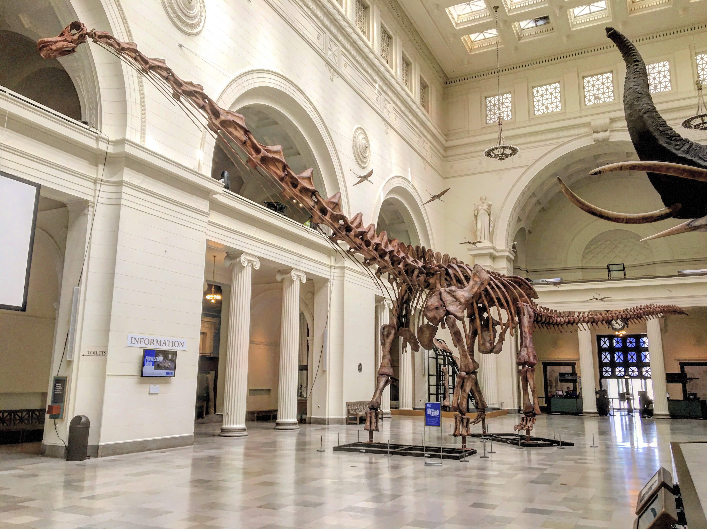

Penemuan Fosil Baru: Patagotitan Mayorum
Para arkeolog di Argentina baru saja menemukan fosil dinosaurus raksasa bernama Patagotitan Mayorum, salah satu makhluk terbesar yang pernah berjalan di Bumi. Fosil ini ditemukan di wilayah Patagonia dan memberikan wawasan baru tentang dinosaurus herbivora dari era Kapur.
Patagotitan Mayorum memiliki panjang tubuh mencapai 37 meter, dengan berat sekitar 70 ton. Ukuran tubuhnya yang luar biasa membuatnya menjadi salah satu dinosaurus terbesar yang pernah ditemukan. Temuan ini mengubah pemahaman para ahli tentang cara hidup dinosaurus berukuran raksasa.
Menurut penelitian, dinosaurus ini hidup sekitar 100 juta tahun yang lalu, saat benua-benua di Bumi masih terhubung dalam superkontinen bernama Gondwana. Penemuan fosil ini memberikan gambaran lebih dalam tentang lingkungan hidup dinosaurus di era tersebut.
Temuan ini tidak hanya penting bagi dunia paleontologi, tetapi juga menarik perhatian banyak pengunjung yang ingin melihat fosil ini secara langsung. Fosil Patagotitan kini dipamerkan di salah satu museum di Argentina, menarik ribuan pengunjung setiap tahunnya.